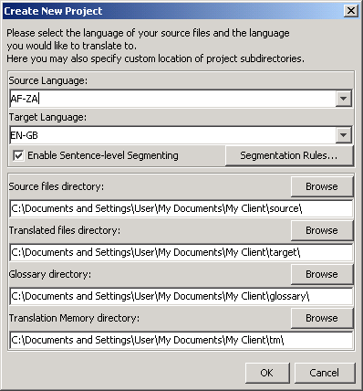

يغطي هذا الدليل الجوانب الرئيسية فقط. يستحسن أن يقرأ المستخدم الدليل حتى يستأنس بكل ما يمنحه البرنامج.
لاستعمال الدليل اضغط على "F1"أو استعمل القائمة مساعدة ← دليل المستخدم
دليل المستخدم هذا هو الوحيد الذي يتوفر على روابط لكل الفقرات الرئيسية.
لمستعملي الماك: الطرق المختصرة المذكورة هنا تستعمل تركيبة "ctrl+key"مما يعني"cmd+key".يكون مفتاح "cmd" ممثلا عن طريق طريق رسم التفاحة بلوحة مفاتيح الماك أو عن طريق علامة "command"
سوف يتم تعويض هذا الدليل بمشروع بمجرد فتحك له. و سوف يتم عرضه مجددا عندما تغلق المشروع.
تتكون شاشة أوميجاتي من فضاء واحد يتشكل من ثلاث نوافذ مختلفة. يمكنك تعديل مساحة كل نافذة بواسطة الفأرة. يتواجد المحرر لكتابة ترجمتك على اليسار. و على اليمين إلى الأعلى يتواجد عارض التطابقات الذي يظهر تطابقات ذاكرة الترجمة. تحته يتواجد عارض مسرد المصطلحات.
يقوم أوميجاتي بتجزئة النص الأصلي إلى جمل أو فقرات بنافذة العرض. قم بترجمة الأجزاء واحداً تلو الآخر. سوف يتم حفظ ترجمتك بذاكرة الترجمة عند مرورك من تجزئة إلى أخرى. عند انتهائك من ترجمة كل الأجزاء (أو قبل ذلك إذا أردت)، سوف يستعمل أوميجاتي ذاكرة الترجمة لتوليد ترجمة النص أو النصوص في المجلد الهدف.
يقوم أوميجاتي بتنظيم أعمال الترجمة في ما يسمى بمشاريع الترجمة. يتم إنشاء مجموعة من المجلدات لكل مشروع، بحيث يتم استعمال هاته الأخيرة لحفظ النصوص اﻷصلية التي ستتم ترجمتها، مسارد المصطلحات وأي ذاكرة ترجمة تود استعمالها. و يقوم أوميجاتي أيضاً بإنشاء مجلد هدف يتضمن نصوص الترجمة النهائية.
قم باختيار مشروع ← جديد... من القائمة
انتقل إلى المجلد الذي تود أن تحفظ ملفات المشروع به و اكتب اسم مشروع الترجمة. سوف يتم استعمال هذا الاسم لمجلد المشروع الرئيسي، بحيث سيتم حفظ كل الملفات بهذا المجلد أو بمجلداته الفرعية.
سوف يطلب منك أوميجاتي تأكيد أو تغيير مجلدات المشروع التي ينبغي إنشاؤها مستعملاً الخطاب التالي:

يمكنك قبول موقع المجلدات الفرعية، و لكن عليك أن تتأكد أن رموز لغات النصوص الأصلية و الترجمة صحيحة. قم باختيار رمز اللغة (حرفين) أو اللغة و المنطقة (حرفين لكل واحد منهما) من اللائحة المنسدلة، او اكتب الرموز بنفسك محترما في ذلك اتباع قاعدة الحرفين الاثنين كما ذكرنا. تذكر جيداً موقع المجلد الهدف الذي ستتواجد به نصوص الترجمة.
إذا كنت تريد أن يقوم أوميجاتي بتجزئة النص إلى جمل بدل تجزئته إلى فقرات، فعليك أن تراجع قواعد التجزئة عن كثب.
سوف يطلب منك أوميجا تي أن تختار النصوص الأصلية لاستيرادها عند موافقتك على تعديلات المشروع. يمكنك استيراد ملفات منفردة أو أشجار أدلة بكاملها بما في ذلك الملفات المتواجدة بالأدلة الفرعية. إذا قمت باستيراد ملفات خاطئة عن غير إرادة أو قمت باستيراد كم كبير من المستندات فإنه بإمكانك إزالتها من مجلد النصوص الأصلية من مشروعك، عن طريق استعمال منظم الملفات مثلاً.
لمراجعة لائحة الملفات التي تود ترجمتها، اذهب إلى نافذة ملفات المشروع (قائمة: المشروع ← ملفات المشروع ). إذا كنت تود تغيير محتويات المجلد الأصلي، فلا تنس أن تعيد تحميل المشروع أولاً : قائمة ( مشروع ← إعادة تحميل ). يقوم أوميجاتي مبدئياً بفتح الملف الأول المتواجد بلائحة المشاريع.
تذكر أن أوميجاتي لن يقوم إلا بترجمة الملفات المتوفرة بالصيغ المذكورة أدناه في حال تطابقها مع الأنماط المحددة بمرشحات الملفات، في حين سيتم تجاهل كل الصيغ الأخرى.
سوف يقوم أوميجاتي بفتح أول ملف أصلي في المحرر مباشرة بعد إنشائك للمشروع و تحديد الملفات التي تنبغي ترجمتها. يبرز الجزء الأول باللون اﻷخضر فيما تتواجد نسخة من النص الأصلي تحته، بالحقل الهدف. (في هذه المرحلة يكون كل النص المتواجد خارج الحقل الهدف محمياً و لا تستطيع تغييره. ) يجب عليك أن تكتب الترجمة بين الوسمين <segment 0001> و <end segment> وفوق النص الأصلي.
اضغط على "ENTER" لتمر إلى الجزء الموالي.
عندما تضغط على "ENTER" فإن هناك أشياء عديدة تقع وراء الستار: يقوم أوميجاتي بإضافة زوج التجزئة (الجزء الأصلي و ترجمته) إلى ذاكرة الترجمة كما يقوم أوتوماتيكيا بترجمة الأجزاء المماثلة التي يجدها في ملفات المشروع الأخرى، كما يقوم بمسح ذاكرة الترجمة و مسرد المصطلحات باحثاً عن أي تطابق للأجزاء الموالية غير المترجمة.
إذا وجد أوميجاتي أي تطابق جزئي (30% و ما فوق ذلك ـ انظر الدليل) للجزء القادم في ذاكرة الترجمة، فإنه يظهره في عارض التطابقات. يتم اختيار التطابق الأول في عارض التطابقات مبدئياً.
لإدخال تطابقات ذاكرة الترجمة من خلال عارض التطابقات إلى الحقل الهدف، يمكنك استعمال مختصرات لوحة المفاتيح التالية:
Ctrl+I لإدخال التطابق المختار بموضع مؤشر الفأرة Ctrl+R لكتابة التطابق المختار فوق الجزء بأكمله. في حال توفر تطابقات عديدة و رغبتك في عدم استعمال التطابق المختار:
Ctrl+2 للتطابق الثاني المعروض و Ctrl+3 للتطابق الثالث، ...الخ Ctrl+I أو Ctrl+R (يمكنك أن تأمر أوميجاتي بإدخال أي تطابق أول يتعدى نسبة تطابق معينة أوتوماتيكياً إلى الحقل الهدف مباشرة بعد فتح التجزئة. اضبط هذا الخيار مستعملاً: خيارات ← سلوك التحرير...)
إذا وجد أوميجاتي تطابقا بنسبة 100% بمسرد المصطلحات فإنه سوف يقوم بعرضه في عارض مسرد المصطلحات. و لا يمكن نقله باستعمال المختصرات.
يوفر أوميجاتي مجالا قويا من وظائف البحث. افتح نافذة البحث بواسطة Ctrl+Fو أدخل الكلمة أو الجملة التي تود أن تبحث عنها في خانة "ابحث عن".
يمكنك بدل ذلك أن تختار الكلمة أو الجملة في حقل التحرير (النص الهدف بالجزء النشط) ثم الضغط علىCtrl+F . يتم إدخال الكلمة أو الجملة في خانة "ابحث عن" أوتوماتيكياً في هذه الحالة.
عندما تنتهي من ترجمة كل الأجزاء أو قبل ذلك أيضاً، يمكنك تحديث النصوص الهدف عن طريق استعمال الترجمات المحفوظة في ذاكرة الترجمة. للقيام بذلك، عليك أن تختار: مشروع ← إنشاء المستندات المترجمة من القائمة
حينها سيقوم أوميجاتي بإنشاء إصدارات لكل المستندات القابلة للترجمة في المجلد الأصلي للمشروع، سواء أكانت قد اكتملت ترجمتها أو لم تتم. و سيتم حفظ الترجمات الكلية أو الجزئية بمجلد الترجمات الهدف.
ﻹنهاء الترجمة، افتح الملفات الهدف في تطبيقاتها المقترنة بها للتحقق من المحتوى و تهيئة الترجمة. يمكنك حينها الرجوع إلى أوميجاتي للقيام بأي تعديلات ضرورية ولا تنس إعادة إنشاء المستندات.
أوميجا تي يضمن الحفاظ على هيئة المستند (خط عريض أو مائل و ما إلى ذلك) عن طريق استعمال علامات خاصة. علامات أوميجاتي تتشكل من حرف أو أكثر، متبوع برقم أو أكثر كما تستعمل أحياناً حرف "/" (مثلاً: <f0>, <br10/> </s2> ...الخ )
يجب عليك أن تتعامل مع كل وسم بحذر و أن تحرص على تواجده بوضع مناسب في الجزء الهدف.
في هذه الأمثلة قمنا بإبراز كل وسم حتى نجعله واضحاً، لكنه لن يكون بارزاً في أوميجاتي. الواصفات الزرقاء هي واصفات HTML التي يقوم أوميجاتي بإهمالها لأنها تحصر الجزء كلياً، الواصفات الخضراء هي التي يقوم أوميجاتي بالتعامل معها لأنها متضمنة بالجزء و الواصفات الحمراء هي التي تظهر بأوميجاتي .
فيما يلي مثال لجزء في HTML:
<p>يمكن اختيار خط آخر عن طريق <b>خطاب</b>خط العرض. افتحه عن طريق <i>خيارات</i> → <i>...خط العرض</i>.عنصر القائمة يمكن تغيير حجم ونوع الخط من خلال الخطاب.</p>
حيث سيبرزه أوميجاتي هكذا باللون الأحمر:
يمكن اختيار خط آخر عن طريق <b0>خطاب </b0>خط العرض. افتحه عن طريق <i1>خيارات</i1> → <i2>...خط العرض</i2>عنصر القائمة... يمكن تغيير حجم ونوع الخط من خلال الخطاب.
فيما يلي مثال لكيفية الترجمة (مثال مأخوذ من اللغة الأفريكانية):
'n Mens kan 'n ander vertoonfont kies met die <b0>Vertoonfont</b0>-dialoogkassie. Kies <i1>Opstelling</i1> → <i2>Vertoonfont...</i2>op die kieslys. Die lettertipe én die lettergrootte kan met dié dialoogkassie verander word.
عندما يقوم أوميجاتي بإنشاء مستند الترجمة، سوف يظهر HTML على الشكل التالي:
<p>'n Mens kan 'n ander vertoonfont kies met die <b>Vertoonfont</b>-dialoogkassie. Kies <i>Opstelling</i> → <i>Vertoonfont...</i>op die kieslys. Die lettertipe én die lettergrootte kan met dié dialoogkassie verander word.</p>
لا يقوم أوميجاتي باكتشاف الواصفات العائبة بطريقة أوتوماتيكية في مستند الترجمة. قبل تسليم النص إلى زبونك، تحقق من صحة الواصفات.
اختر أدوات ← تحقق من الواصفات من القائمة، سوف يظهر لك جدول به المقاطع التي لا تتناسب فيها واصفات النص اﻷصلي مع الهدف. اضغط على رقم الجزء.
سوف يتم الانتقال بك مباشرة إلى المقطع العائب في المحرر حيث يمكنك القيام بالتصحيح.
الواصفات الخاطئة قد تؤدي أحيانا إلى عدم القدرة على فتح المستند. و بالتالي، يتوجب عليك تصحيح كل وسم قبل إنشاء ملفات الترجمة.
ختاماً، يجب عليك أن تتأكد بدقة من تنسيق المستند من خلال فتحه بالعارض أو المحرر المقترن به.